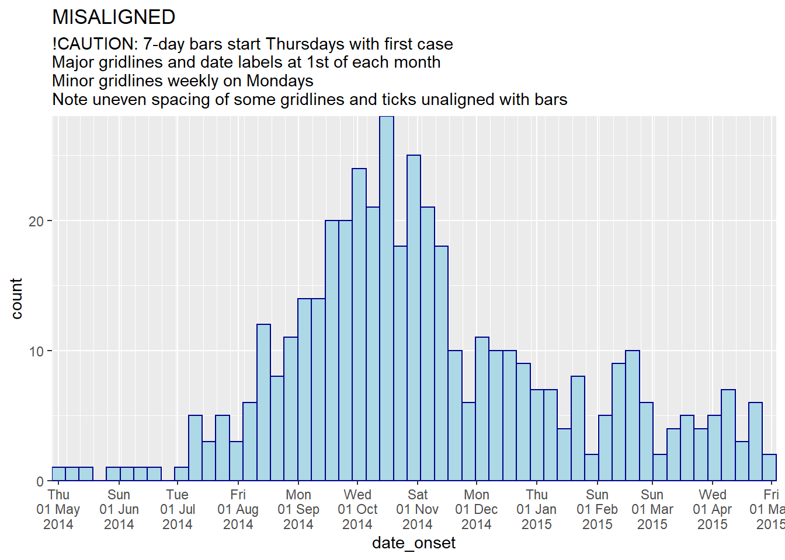
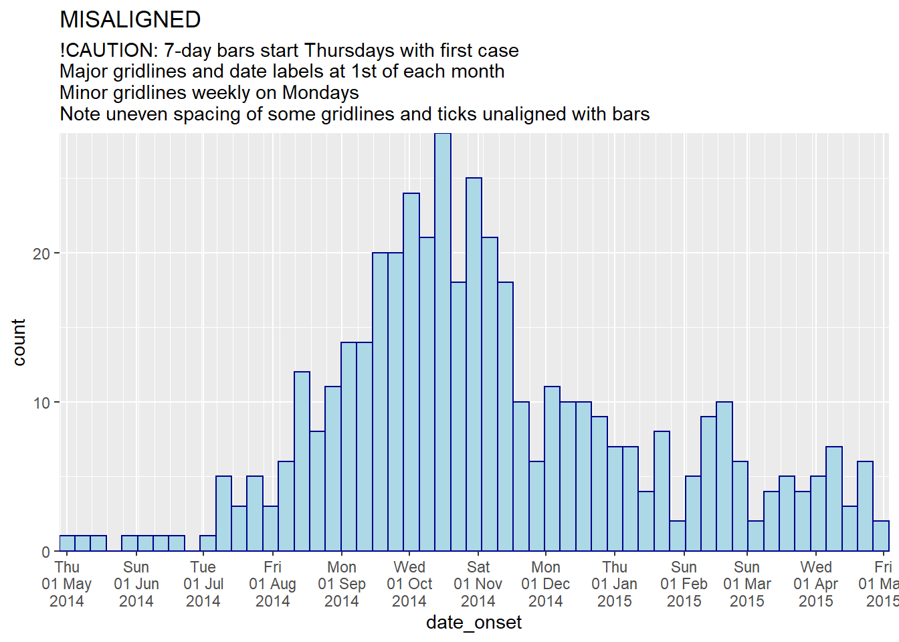

30 Plot categorical data
For appropriate plotting of categorical data, e.g. the distribution of sex, symptoms, ethnic group, etc.
30.1 Overview
In this section we cover use of R’s built-in functions or functions from the ggplot2 package to visualise categorical/categorical data. The additional functionality of ggplot2 compared to R means we recommend it for presentation-ready visualisations.
We cover visualising distributions of categorical values, as counts and proportions.

30.2 Preparation
Preparation includes loading the relevant packages, namely ggplot2 for examples covered here. We also load the data.
30.2.1 Load packages
This code chunk shows the loading of packages required for the analyses. In this handbook we emphasize p_load() from pacman, which installs the package if necessary and loads it for use. You can also load packages with library() from base R. See the page on R basics for more information on R packages.
# Load packages we will be using repeatedly
pacman::p_load(ggplot2, # Package for visualisation
dplyr, # Package for data management
forcats) # Package for factorsImport data
We import the dataset of cases from a simulated Ebola epidemic. If you want to download the data to follow step-by-step, see instructions in the Datasets used page. The dataset is imported using the import() function from the rio package. See the page on Import and export for various ways to import data.
# import the linelist
linelist <- rio::import("linelist_cleaned.xlsx")The first 50 rows of the linelist are displayed below.
30.2.2 Process columns for analysis
For the examples in this section, we use the simulated Ebola linelist, focusing on the categorical variables hospital, and outcome. These need to be the correct class and format.
Let’s take a look at the hospital column.
# View class of hospital column - we can see it is a character
class(linelist$hospital)## [1] "character"
# Look at values held within hospital column
table(linelist$hospital)##
## Central Hospital Military Hospital Missing
## 454 896 1469
## Other Port Hospital St. Mark's Maternity Hospital (SMMH)
## 885 1762 422We can see the values within are characters, as they are hospital names, and by default they are ordered alphabetically. There are ‘other’ and ‘missing’ values, which we would prefer to be the last subcategories when presenting breakdowns. So we change this column into a factor and re-order it. This is covered in more detail in the ‘factors’ data management section.
# Change hospital to factor variable
linelist <- linelist %>%
mutate(hospital = factor(hospital))
# Define the levels of factor with forcats - so other and missing are last
linelist <- linelist %>%
mutate(hospital = fct_relevel(hospital,
c("St. Mark's Maternity Hospital (SMMH)",
"Port Hospital",
"Central Hospital",
"Military Hospital",
"Other",
"Missing")))30.2.3 Ensure correct data structure
For displaying frequencies and distributions of categorical variables, you have the option of creating plots based on:
- The linelist data, with one row per observation, or
- A summary table based on the linelist, with one row per category. An example is below to show the use of
dplyrto create a table of case counts per hospital.
Tables can be created using the ‘table’ method for built-in graphics. The useNA = "ifany" arguments ensures that missing values are included, as table otherwise automatically excludes them.
#Table method
outcome_nbar <- table(linelist$outcome,
useNA = "ifany")
outcome_nbar # View full table##
## Death Recover <NA>
## 2582 1983 1323Or using other data management packages such as dplyr. In this example we add on a percentage column.
#Dplyr method
outcome_n <- linelist %>%
group_by(outcome) %>%
count %>%
ungroup() %>% # Ungroup so proportion is out of total
mutate(proportion = n/sum(n)*100) # Caculate percentage
outcome_n #View full table## # A tibble: 3 x 3
## outcome n proportion
## <chr> <int> <dbl>
## 1 Death 2582 43.9
## 2 Recover 1983 33.7
## 3 <NA> 1323 22.530.3 Plotting with ggplot2
Plotting with ggplot2
30.3.1 Code syntax
Ggplot has extensive functionality, and the same code syntax can be used for many different plot types.
Similar to the plotting continuous data section, basic breakdown of the ggplot code is as follows:
ggplot(data = linelist)+
geom_XXXX(aes(x = col1, y = col2),
fill = "color") -
ggplot()starts off the function. You can specify the data and aesthetics (see next point) within the ggplot bracket, unless you are combining different data sources or plot types into one -
aes()stands for ‘aesthetics’, and is where the columns used for the visualisation are specified. For instanceaes(x = col1, y = col2)to specify the data used for the x and y values. -
fillspecifies the colour of bars, or of the subgroups if specified within theaesbreacket. -
geom_XXXspecifies what type of plot. Options include:-
geom_bar()for a bar chart based on a linelist -
geom_col()for a bar chart based on a table with values (see preparation section)
-
Note that the aes() bracket can be within the ggplot() bracket or within the specific geom_XXX bracket. If you are layering different ggplots with diferent aesthetics, you will need to specify them within each geom_XXX.
For more see section on ggplot tips.
30.3.2 Bar charts using raw data
Below is code using geom_bar for creating some simple bar charts to show frequencies of Ebola patient outcomes: A) For all cases, and B) By hospital.
In the aes bracket, only x needs to be specified - or y if you want the bars presented horizontally. Ggplot knows that the unspecified y (or x) will be the number of observations that fall into those categories.
# A) Outcomes in all cases
ggplot(linelist) +
geom_bar(aes(x=outcome)) +
labs(title = "A) Number of recovered and dead Ebola cases")
# B) Outcomes in all cases by hosptial
ggplot(linelist) +
geom_bar(aes(x=outcome, fill = hospital)) +
theme(axis.text.x = element_text(angle = 90)) + # Add preference to rotate the x axis text
labs(title = "B) Number of recovered and dead Ebola cases, by hospital")

30.3.3 Bar charts using processed data
Below is code using geom_col for creating simple bar charts to show the distribution of Ebola patient outcomes. With geom_col, both x and y need to be specified. Here x is the categorical variable along the x axis, and y is the generated proportions column proportion.
# Outcomes in all cases
ggplot(outcome_n) +
geom_col(aes(x=outcome, y = proportion)) +
labs(subtitle = "Number of recovered and dead Ebola cases")
To show breakdowns by hospital, an additional table needs to be created for frequencies of the combined categories outcome and hospital.
outcome_n2 <- linelist %>%
group_by(hospital, outcome) %>%
count() %>%
group_by(hospital) %>% # Group so proportions are out of hospital total
mutate(proportion = n/sum(n)*100)
head(outcome_n2) #Preview data## # A tibble: 6 x 4
## # Groups: hospital [3]
## hospital outcome n proportion
## <fct> <chr> <int> <dbl>
## 1 St. Mark's Maternity Hospital (SMMH) Death 199 61.2
## 2 St. Mark's Maternity Hospital (SMMH) Recover 126 38.8
## 3 Port Hospital Death 785 57.6
## 4 Port Hospital Recover 579 42.4
## 5 Central Hospital Death 193 53.9
## 6 Central Hospital Recover 165 46.1We then create the ggplot with some added formatting:
-
Axis flip: Swapped the axis around with
coord_flip()so that we can read the hospital names. -
Columns side-by-side: Added a
position = "dodge"argument so that the bars for death and recover are presented side by side rather than stacked. Note stacked bars are the default. - Column width: Specified ‘width’, so the columns are half as thin as the full possible width.
-
Column order: Reversed the order of the categories on the y axis so that ‘Other’ and ‘Missing’ are at the bottom, with
scale_x_discrete(limits=rev). Note that we used that rather thanscale_y_discretebecause hospital is stated in thexargument ofaes(), even if visually it is on the y axis. We do this because Ggplot seems to present categories backwards unless we tell it not to.
-
Other details: Labels/titles and colours added within
labsandscale_fill_colorrespectively.
# Outcomes in all cases by hospital
ggplot(outcome_n2) +
geom_col(aes(x=hospital,
y = proportion,
fill = outcome),
width = 0.5, # Make bars a bit thinner (out of 1)
position = "dodge") + # Bars are shown side by side, not stacked
scale_x_discrete(limits=rev) + # Reverse the order of the categories
theme_minimal() + # Minimal theme
coord_flip() +
labs(subtitle = "Number of recovered and dead Ebola cases, by hospital",
fill = "Outcome", # Legend title
x = "Count", # X axis title
y = "Hospital of admission") + # Y axis title
scale_fill_manual(values = c("Death"= "#3B1c8C",
"Recover" = "#21908D" )) 
Note that the proportions are binary, so we may prefer to drop ‘recover’ and just show the proportion who died. This is just for illustration purposes though.
30.3.4 Facetting
We can also use faceting to create futher mini-graphs, which is detailed with examples in the continuous data visualisation section. Specifically, one can use:
-
facet_wrap()- this will recreate the sub-graphs and present them alphabetically (typically, unless stated otherwise). You can invoke certain options to determine the look of the facets, e.g.nrow=1orncol=1to control the number of rows or columns that the faceted plots are arranged within. -
facet_grid()- this is suited to seeing subgroups for particular combinations of categorical variables.
30.4 Plotting with base graphics
In-built graphics package
Bar charts
To create bar plots in R, we create a frequency table using the table function. This creates an object of a table class, that R can recognise for plotting. We can create a simple frequency graph showing Ebola case outcomes (A), or add in colours to present outcomes by gender (B).
Note that NA values are excluded from these plots by default.
# A) Outcomes in all cases
outcome_nbar <- table(linelist$outcome)
barplot(outcome_nbar, main= "A) Outcomes")
# B) Outcomes in all cases by gender of case
outcome_nbar2 <- table(linelist$outcome, linelist$gender) # The first column is for groupings within a bar, the second is for the separate bars
barplot(outcome_nbar2, legend.text=TRUE, main = "B) Outcomes by gender") # Specify inclusion of legend 
